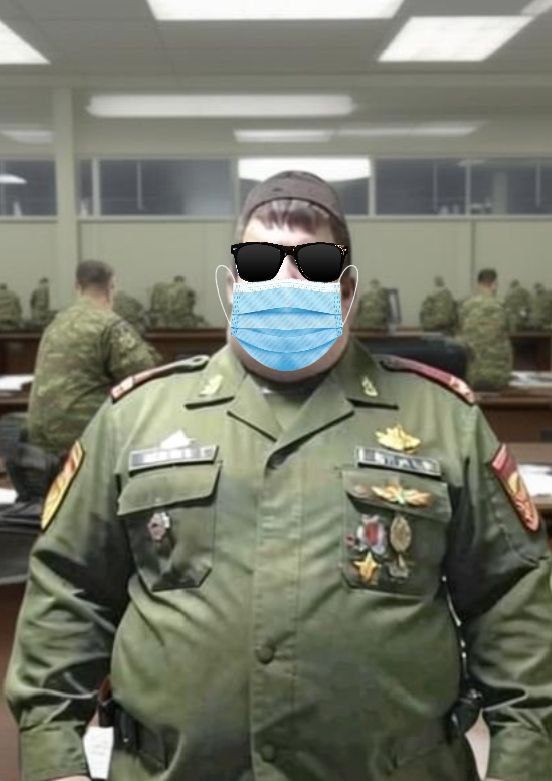
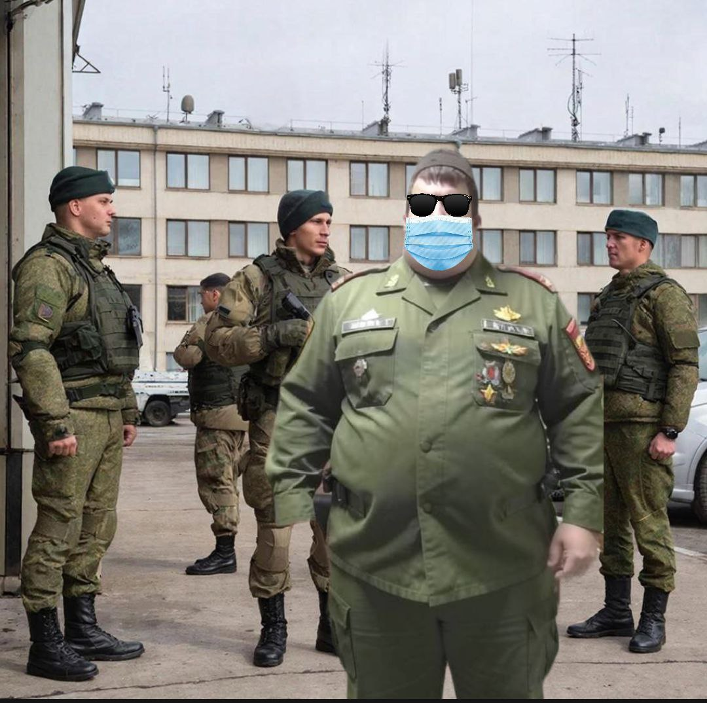

О Викторе Торпедове известно мало так как вся информация о нём хранится в строжайшем секрете. Однако известно, что ушёл в отставку после серьёзного ранения в живот и колено в ходе отражения атаки Натовских группировок на территорию Ромашковой долины. В ходе этой атаки выявилась неподготовленность личного состава армии РД так как потери с обеих сторон были не маленькие, однако войска НАТО были вынуждены отступить и принять поражение. Сейчас Виктор Торпедов находится на пенсии и преподает историю и общество в институте МВД Ромашковой долины. За проявленные подвиги был повышен и является почётным гражданином Ромашковой долины.
